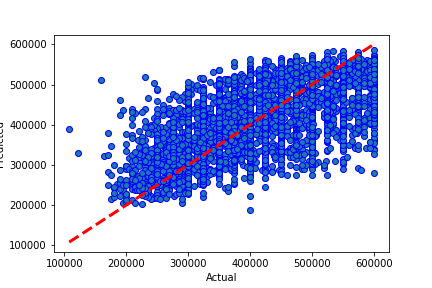

Results from Neural Network m15 mega + dropout
Dataset Version: 11
Date run: 2022-12-21 02:55:37.625783
Start time: 2022-12-21 02:35:29.988110
End time: 2022-12-21 02:55:37.625776
Results
Summary
pickled new version of model
0.5707003911724469 is new best score (it's better than -999)
Best Model: Comparing model predictions to actual property values

Model Specific Notes
can't display hyperparameter comparison for neural network
can't display model performance graphs for neural network
can't display model performance graphs for neural network
Neural Network Loss - Head
|
loss |
val_loss |
epoch |
| 0 |
425119.96875 |
425827.12500 |
0 |
| 1 |
424948.03125 |
425584.96875 |
1 |
| 2 |
424658.50000 |
425297.75000 |
2 |
| 3 |
424271.87500 |
424873.71875 |
3 |
| 4 |
423800.65625 |
424434.68750 |
4 |